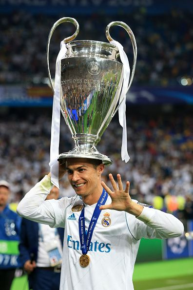

Christiano Ronaldo was born in maderia, portugal. He family was very poor and struggled finacally. but ronaldos love of the game was very strong. he would play with soccer balls made of garbage and his tallent and hard work stood above the rest. eventually he made into the sporting academy at age 12 then at age 16 got into manchester united
At his time in manchester united, he won the 2008 champions leauge and won his fist ballon'dor that year at 23 years old. in manchester united he also won the primier leauge 3 times there and the club world cup once.
Then in 2009 Ronaldo tranfered to Man U to Real Madrid in 2009 for a whopping 80 million at the time it was a world record fee. At real madrid he brok records after records scoring a total 450 gols for the club the most in its history. and helped real madrid secure 4 more champions leauges, 2 la liga titles, and 3 club world cups.
Cristiano Ronaldo is also known as the "king of the Champions Leauge" Hes won the cup 5 times, has the most goals recorded in champions leauge history (140), and has a rocord of the most goals scored in a single season(17) Also ronaldo has dominated for his country as winning the Euros in 2016 making it portugals first ever trophy and the nations leauge in 2019 and 2025
